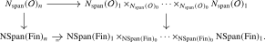
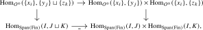
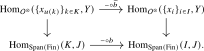

We can now make the construction of Construction 12.4.1 precise. The idea is to repeat the construction of the span category, adding the operation labels to its pullback diagrams. The resulting simplicial anima is Segal, but need not be complete. The associated category construction from Construction 1.8.12 supplies the desired \(\infty \)-category without changing its hom animae.
Construction 14.2.1 (Labeled pullback diagrams). Let \(\Oo \) be a classical colored operad with sets of operations. We use the finite-set-indexed operations and their transport along bijections from Convention 12.3.2. We first construct a simplicial object in the strict category of groupoids and functors.
For \(n\geq 0\), define a groupoid \(N_{\mathrm {span}}(\Oo )_n\) as follows. An object consists of:
- (1)
-
A diagram \(S\colon \Tw ^r([n])\to \Fin \) belonging to \(\NSpan (\Fin )_n\), as in Construction 13.1.10. Write \(S_{ij}=S(i\leq j)\). The induced maps \(S_{ik}\to S_{ij}\times _{S_{jj}}S_{jk}\) are bijections for \(i\leq j\leq k\). The structure maps of \(S\) give spans \[ S_{ii}\xleftarrow {f_{ij}}S_{ij}\xrightarrow {g_{ij}}S_{jj}. \]
- (2)
-
For each \(i\), a family \(\{x^i_s\}_{s\in S_{ii}}\) of colors of \(\Oo \).
- (3)
-
For every \(i\leq j\) and \(t\in S_{jj}\), an operation \[ \varphi _{ij,t}\in \Oo \bigl (\{x^i_{f_{ij}(u)}\}_{u\in g_{ij}^{-1}(t)};x^j_t\bigr ). \] For \(i=j\) this is required to be \(\id _{x^i_t}\). For \(i\leq j\leq k\) and \(t\in S_{kk}\), we require that \(\varphi _{ik,t}\) agrees with the composite operation \[ \varphi _{jk,t}\circ \bigl (\varphi _{ij,f_{jk}(v)}\bigr )_{v\in g_{jk}^{-1}(t)} \] under the bijection \(\{(u,v)\in S_{ij}\times _{S_{jj}}S_{jk}\mid g_{jk}(v)=t\} \cong \{w \in S_{ik} \mid g_{ik}(w) = t\}\).
A morphism is a natural isomorphism of the finite-set diagrams that preserves the diagonal colors and carries each operation label to the corresponding label by transport of its input set. In particular, it does not include arbitrary invertible unary operations between the diagonal colors.
For a monotone map \(\alpha \colon [m]\to [n]\), define \(\alpha ^*\colon N_{\mathrm {span}}(\Oo )_n\to N_{\mathrm {span}}(\Oo )_m\) by restriction along \(\Tw ^r(\alpha )\), with colors \(x^{\alpha (i)}\) and labels \(\varphi _{\alpha (i)\alpha (j),t}\). Pullback squares remain pullback squares under this restriction, and the two conditions in (3) remain valid. Note that we have strict equalities \((\alpha \beta )^*=\beta ^*\alpha ^*\) and \(\id ^*=\id \), so that we obtain a strict functor from \(\simp \catop \) to the strict category of groupoids. Composing with the functor that regards groupoids as animae gives a simplicial anima, which we also denote by \(N_{\mathrm {span}}(\Oo )\), and a forgetful map \(N_{\mathrm {span}}(\Oo )\to \NSpan (\Fin )\). A morphism of classical operads acts on colors and operation labels, commuting with restriction and forgetting labels. Thus \(N_{\mathrm {span}}(\Oo )\) is functorial in \(\Oo \), and the forgetful map is natural.
Lemma 14.2.2. The simplicial anima \(N_{\mathrm {span}}(\Oo )\) is Segal. Its hom anima from \(X=\{x_i\}_{i\in I}\) to \(Y=\{y_j\}_{j\in J}\) is the groupoid of spans \(I\xleftarrow {f}K\xrightarrow {g}J\) labeled by operations \[ \varphi _j\in \Oo (\{x_{f(k)}\}_{k\in g^{-1}(j)};y_j). \] Morphisms in this groupoid are bijections of \(K\) over \(I\) and \(J\) that transport the labels to one another.
Proof. The forgetful map gives a commutative square of Segal maps, with \(n\) factors on the right:

The bottom map is an isomorphism by Proposition 13.1.11, so it suffices to check that the induced maps on fibers are isomorphisms. For fixed \(S\in \NSpan (\Fin )_n\), the left fiber consists of families of colors indexed by each finite set \(S_{ii}\) for \(0 \leq i \leq n\), and compatible operation labels on all \(S_{ij}\). Since fibers commute with fiber products, the right fiber consists of the same color assignments on each \(S_{ii}\), and labels only on the consecutive spans \(S_{i-1,i-1}\leftarrow S_{i-1,i}\to S_{ii}\). The induced map that forgets the remaining operations is a bijectio: the diagonal labels are identities, and under the induced bijections \[ S_{ij}\iso S_{i,i+1}\times _{S_{i+1,i+1}}\cdots \times _{S_{j-1,j-1}}S_{j-1,j} \] we recover the labels on \(S_{ij}\) by iterated substitution. This proves the Segal condition.
Finally, the hom anima from \(X\) to \(Y\) is the fiber of \(N_{\mathrm {span}}(\Oo )_1\to N_{\mathrm {span}}(\Oo )_0\times N_{\mathrm {span}}(\Oo )_0\) at \((X,Y)\), which we may identify with the groupoid of labeled spans from \(X\) to \(Y\), as stated. □
Construction 14.2.3 (The associated category). Set \(\Oo ^{\otimes }:=\ac (N_{\mathrm {span}}(\Oo ))\). Applying \(\ac \) to the forgetful map gives a functor \[ p_{\Oo }\colon \Oo ^{\otimes }\longrightarrow \ac (\NSpan (\Fin ))\simeq \Span (\Fin ), \] where the last equivalence is supplied by Proposition 13.1.11, Theorem 25.1.10. By Proposition 25.1.9, every object of \(\Oo ^{\otimes }\) is isomorphic to a tuple, and its hom animae between tuples are those of Lemma 14.2.2. Naturality of the completion map identifies \(p_{\Oo }\) on these hom animae with forgetting the labels. Composition is given by pullback of spans followed by substitution on labels. All in all, \(\Oo ^{\otimes }\) is the \((2,1)\)-category described in Construction 12.4.1.
Proposition 14.2.4. The construction \(\Oo \mapsto (\Oo ^{\otimes },p_{\Oo })\) defines a functor from classical colored operads to \(\infty \)-operads. The underlying \(\infty \)-category of the associated \(\infty \)-operad is naturally equivalent to the classical category \(U(\Oo )\) of colors and unary operations. For a span \(\alpha =(I\xleftarrow {f}K\xrightarrow {g}J)\) and families of colors \(\{x_i\}_{i\in I}\) and \(\{y_j\}_{j\in J}\), there is an isomorphism \[ \Hom _{\Oo ^{\otimes }}^{\alpha } (\{x_i\}_{i\in I},\{y_j\}_{j\in J}) \quad \simeq \quad \prod _{j\in J}\Oo (\{x_{f(k)}\}_{k\in g^{-1}(j)};y_j). \] In particular, its multimorphism animae are the classical operation sets, regarded as discrete animae.
Proof. By Lemma 14.2.2, the map \[ \Hom _{\Oo ^{\otimes }}(\{x_i\}_{i \in I}, \{y_j\}_{j \in J}) \to \Hom _{\Span (\Fin )}(I,J) \] on hom animae forgets the operation labels on a span. Its fiber over \(\alpha \) is the displayed product of operation sets, since there is a unique way to transport labels along a bijection of spans.
We show that concatenation gives binary products in \(\Oo ^{\otimes }\), with projections given by the backwards spans for the summand inclusions labeled by the identity. To see this, consider tuples \(\{x_i\}_{i \in I}\), \(\{y_j\}_{j \in J}\) and \(\{z_k\}_{k \in K}\). The projections give a commutative square

in which the bottom map is an isomorphism because disjoint union is the product in \(\Span (\Fin )\). From the computation of the first paragraph, it is also clear that the induced map on fibers is a bijection showing that \(\{y_j\}\sqcup \{z_k\}\) is a product in \(\Oo ^{\otimes }\) of \(\{y_j\}\) and \(\{z_k\}\). In analogous fashion one shows that the empty tuple is the terminal object, so that \(\Oo ^{\otimes }\) admits finite products. It is also clear from these computations that \(p_{\Oo }\) preserves finite products.
Next we identify fiber \(\Oo ^{\otimes }_I\) over a finite set \(I\) with the product \(U(\Oo )^I\). There is a map of simplicial animae \(N(U(\Oo )^I) \to N_{\mathrm {span}}(\Oo )\) given in degree \(n\) by sending a string of \(n\) composable morphisms in \(U(\Oo )^I\) to the constant pullback diagram \(\const _I \colon \Tw ^r([n]) \to \Fin \) labeled by the composites of the given unary operations. Since the underlying pullback diagram is constant on \(I\), passing to associated \(\infty \)-categories results in a functor \[ U(\Oo )^I\longrightarrow \Oo ^{\otimes }_I. \] This functor is clearly essentially surjective, and it is fully faithful by the earlier identification of the hom animae for \(\alpha = \id _I\). We conclude it is an equivalence.
For \(I=\lra {1}\) this identifies the underlying category as claimed. Under these equivalences, concatenation is the equivalence required in condition (2) of Definition 14.1.1.
Next we verify the full cocartesian universal property. Let \(u\colon K\to I\) be a map in \(\Fin \), let \(\{x_i\}_{i\in I}\) be a family of colors, and let \(\widehat b\colon \{x_i\}_{i\in I}\to \{x_{u(k)}\}_{k\in K}\) be the lift of \(b=(I\xleftarrow {u}K\xrightarrow {=}K)\) whose labels are identities. For any tuple \(Y=\{y_j\}_{j\in J}\), consider the square

For a span \(\beta =(K\xleftarrow {a}L\xrightarrow {h}J)\), the induced map from the fiber over \(\beta \) to the fiber over \(\beta \circ b\) is identified with the identity on \[ \prod _{j\in J}\Oo (\{x_{u(a(l))}\}_{l\in h^{-1}(j)};y_j), \] since composition with \(\widehat b\) leaves the operation labels unchanged by the unit axiom. Thus the square is a pullback, showing that \(\widehat b\) is \(p_{\Oo }\)-cocartesian.
Finally, let \(f\colon B\to A\) and let \(X_a\) be arbitrary objects of \(\Oo ^{\otimes }\), represented by tuples indexed by \(T_a\). The map in condition (3) of Definition 14.1.1 is the identity-labeled backwards span associated with \[ \bigsqcup _{b\in B}T_{f(b)}\longrightarrow \bigsqcup _{a\in A}T_a,\qquad (b,t)\longmapsto (f(b),t). \] The preceding argument proves it cocartesian. This also covers empty tuples.
The functor induced by a morphism of classical operads preserves concatenation, its projections, and the empty tuple, hence finite products. □
Remark 14.2.5. The simplicial anima \(N_{\mathrm {span}}(\Oo )\) need not be complete: non-identity invertible unary operations are not represented by identifications in \(N_{\mathrm {span}}(\Oo )_0\). The associated category construction producing \(\Oo ^{\otimes }\) adds these identifications without changing the hom animae.
Further note that the hom animae of \(\Oo ^{\otimes }\) need not be discrete. For example, \(N_{\mathrm {span}}(\Comm )=\NSpan (\Fin )\), so \(\Comm ^{\otimes }\simeq \Span (\Fin )\), whose hom groupoids include the automorphisms of spans.
Corollary 14.2.6. The classical colored operads \(\Assoc \), \(\oLMod \), and \(\oMod \) determine \(\infty \)-operads whose multimorphism animae are their classical operation sets. The same construction applies to the bimodule operad of Definition 17.2.1.
Proof. Apply Proposition 14.2.4. □
Remark 14.2.7. By Corollary 14.2.6, the classical associative operad determines the associative \(\infty \)-operad \(\Assoc \). The topological little \(n\)-cubes operad of Example 12.1.7 similarly determines an \(\infty \)-operad \(\Ee _n\); see [Lurie (2017), Section 5.1.0] for the construction. For \(n=1\), the operad morphism \(\Ee _1\to \Assoc \) described after Example 12.1.7 is an equivalence of \(\infty \)-operads by [Lurie (2017), Example 5.1.0.7].